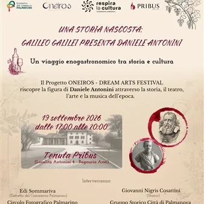

sab 19 set
Una storia nascosta: Galileo Galilei presenta Daniele Antonini - ANNULLATO
Il progetto Oneiros - Dream Arts Festival riscopre la figura di Daniele Antonini attraverso la storia, il teatro, l'arte e la musica d'epoca. Oneiros: “sogno”. Nome del figlio del dio Hypnos e della dea Notte. Dreams Arts Festival: evento culturale multidisciplinare dedicato al…
 Indicazioni
Indicazioni
- Costi e prenotazioni
- Costo non indicato · Prenotazione non indicata
- Programma
- Programma da verificare. Apri la fonte ufficiale per orari e possibili aggiornamenti.
- In caso di maltempo
- Nessuna indicazione specifica pubblicata.
- Note
- Acquisito automaticamente dalla fonte.
L’EVENTO
Descrizione completa
Il progetto Oneiros - Dream Arts Festival riscopre la figura di Daniele Antonini attraverso la storia, il teatro, l'arte e la musica d'epoca.
Oneiros: “sogno”. Nome del figlio del dio Hypnos e della dea Notte.
Dreams Arts Festival: evento culturale multidisciplinare dedicato al tema del sogno, inteso come spazio di libertà, creatività, transizione, dialogo tra i mondi e sfere temporali. Il festival, volutamente itinerante per ricalcare la dimensionealata e messaggera del dio, si svolge in varie località del Friuli Venezia Giulia e propone un viaggio tra teatro, musica, storia e arti visive.
Respira la Cultura, Società Cooperativa Consortile, idea così una giornata-evento capace di valorizzare il luogo, recuperandone la storia, aumentandone la fruibilità e offrendo ai partecipanti un’esperienza immersa e coinvolgente, fondata sul turismo culturale ed enogastronomico. In questa occasione si vuole raccogliere e diffondere la storia della Tenuta Pribus, incentrata sulla figura di Daniele Antonini e del suo rapporto con Galileo Galilei, mettendo in risalto l’attività e dell’Azienda e della Cooperativa.
ore 17.00 - brindisi di benvenuto con interventi di Giovanni Nigris Cosattini (storico) ed Edi Sommariva (Distretto del Commercio Palmarino);
IL PROGRAMMA
Programma e orari
Appuntamenti raccolti dalle fonti elencate. Dove manca un orario, non è ancora disponibile in questa scheda.
Programma pubblicato
- ore 17.00 - brindisi di benvenuto con interventi di Giovanni Nigris Cosattini (storico) ed Edi Sommariva (Distretto del Commercio Palmarino);
- ore 18.00 - proiezione multimediale "Storia di un soldato" a cura del Circolo Fotografico Palmarino;
- ore 18.15 - concerto barocco con Marianna Acito (mezzosoprano) e Tommaso Del Ponte (clavicembalo);
- ore 18.45 - spettacolo teatrale "Dialoghi sopra due personaggi del mondo" di Eleonora Ferrari con gli interpreti Mark Veznaver e Fabio Cassisi (Compagnia Drammadilli)
- ore 19.05 - dimostrazione teatrale a cura del Gruppo Storico Città di Palmanova;
- ore 19.30 - letture delle poesie di Alfonso Antonini, interventi musicali a cura di Marianna Acito (mezzosoprano) e Tommaso Del Ponte (clavicembalo),
- ore 20.00 - Saluti finali
INFORMAZIONI UTILI
Prima di partire
- Controllare la fonte prima di partire.
ORGANIZZAZIONE